2026 — 2027CURRENT
Second Year · Integrated Preparatory Cycle (MI)
Faculty of Mathematical, Physical and Natural Sciences of Tunis (FST)
Curiosity, code, and the courage to keep building.
Second-year Mathematics and Computer Science student at the Faculty of Sciences of Tunis. I’m building strong foundations in programming and algorithms while exploring software, cybersecurity, and AI through projects and technical learning.
I’m not trying to know a little about everything. I’m building the foundations to understand technology deeply.// MY WORKING MINDSET
I’m a second-year Mathematics and Computer Science student at the Faculty of Sciences of Tunis (FST). My academic path started with a Mathematics Baccalaureate in 2025, followed by the integrated preparatory cycle: MPI in 2025–2026 and MI in 2026–2027.
Alongside university studies, I explore software development, cybersecurity, data, and introductory machine learning through online courses, workshops, and technical activities. I enjoy learning by building, testing, debugging, and documenting what I discover.
This site is a snapshot of a journey in progress: the foundations I’m strengthening, the projects I’m developing, and the challenges I want to take on next.
A mathematics-focused path moving into computer science and the practical side of engineering.
Faculty of Mathematical, Physical and Natural Sciences of Tunis (FST)
Faculty of Mathematical, Physical and Natural Sciences of Tunis (FST)
Obtained in 2025 · Distinction: Très Bien
A growing toolkit developed through coursework, practice, and hands-on learning—not a list of buzzwords.
Building foundations in programming, computational thinking, and problem-solving.
See related learning ↗Learning to structure, query, and understand data using relational database fundamentals.
See related learning ↗Exploring security concepts through cybersecurity workshops, CTF participation, and guided practice.
See related learning ↗Exploring introductory machine-learning workflows and data-driven experimentation.
See related learning ↗Learning to turn ideas into useful interfaces and applications with web technologies and Flutter.
Explore projects ↗Interested in cloud technologies, high-performance computing, and understanding how systems work.
See related learning ↗First-year foundations: C programming (functions, pointers, dynamic memory, files), algorithms and data structures, recursion and complexity, Windows/Unix command-line basics, binary arithmetic, Boolean algebra and digital logic.
The current-year programme includes object-oriented programming and C++, Python, a Java workshop, web development, database engineering, information-system design, computer architecture, operating systems, local networks and data transmission.
I’m still learning. These labels describe current learning areas, not claims of professional-level mastery.
A living snapshot of the areas I am focusing on now — honest about what is in progress, and open to change.
Keep building confidence in algorithms, programming fundamentals, and structured problem-solving through study and practice.
Related learning ↗Iterate on student projects, make decisions explicit, and explain the problem, approach, trade-offs, and next steps.
Explore projects ↗Continue exploring cybersecurity through authorized challenges, student activities, and careful notes on the problem-solving process.
Related activities ↗Portfolio refinement: richer certificate learning notes, responsive interactions, accessibility improvements, and faster keyboard navigation.
Projects are where learning becomes visible. Here are initiatives and experiments I’m developing or exploring.
An offline-first, local pass-and-play social deduction game concept for one device, with multilingual play and configurable roles.
A student-led educational initiative focused on sharing learning resources, summaries, and exercises for Tunisian students.
Learning by solving cybersecurity challenges, taking part in student technical activities, and documenting problem-solving approaches in legal environments.
This site: a multilingual space to present my academic journey, current skills, technical interests, projects, and certificates.
Project descriptions reflect work in progress; features and scope may evolve as development continues.
A selection of courses, skills assessments, and technical activities from my learning journey. Open a document to view the original.
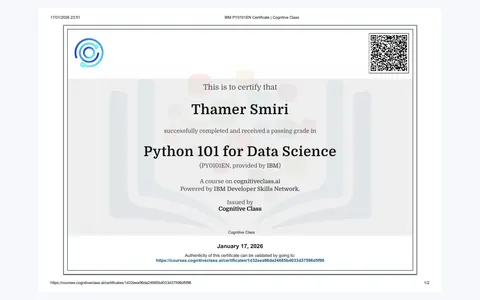
IBM Skills Network · Cognitive Class
Practice core Python concepts such as variables, data types, collections, conditions, loops, and functions as a foundation for working with data.
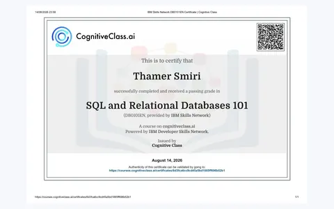
IBM Skills Network · Cognitive Class
Build a foundation in relational data and SQL: reading structured records, writing queries, filtering results, and understanding how tables represent information.
Programming Hub
Reinforce introductory C programming concepts, including structured instructions, variables, control flow, and the logic used to build small programs.
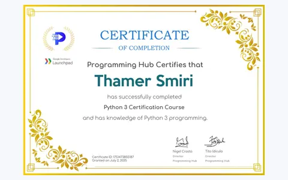
Programming Hub
Strengthen Python 3 fundamentals and the habits needed to express problems clearly with readable, structured code.
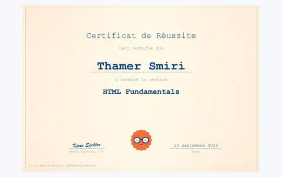
Coddy · Web development fundamentals
Practice the building blocks of web pages: HTML document structure, elements, attributes, links, and clear content hierarchy.
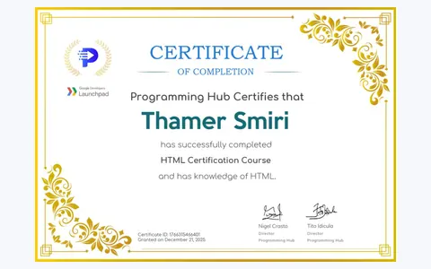
Web development fundamentals
Revisit the fundamentals of HTML markup and how semantic page structure helps browsers and people understand web content.
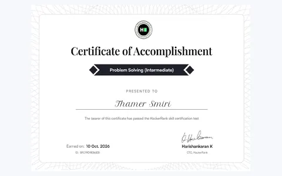
HackerRank · Skill certification
Practice breaking a problem into smaller parts, reasoning about possible approaches, and checking a solution against the task requirements.
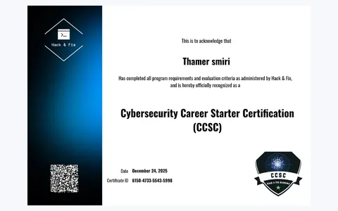
Hack & Fix Academy · December 2025
Use the course as an introduction to cybersecurity vocabulary, security awareness, and the importance of thinking about risks and responsible practice.
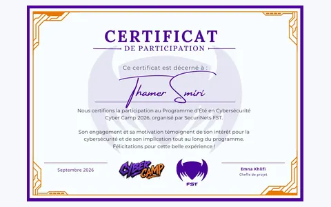
SecuriNets FST · Summer cybersecurity programme
Key takeaways from participating in a cybersecurity summer programme: analytical thinking, practical challenge-solving, collaboration, and responsible security practice.
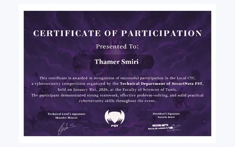
SecuriNets FST · 31 January 2026
Practice a methodical challenge-solving mindset: examine clues, form hypotheses, test them safely, and document the reasoning behind a result.
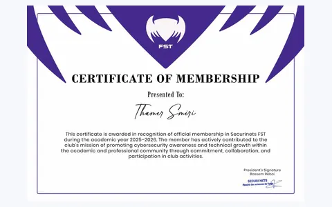
Student technical community activity
A community experience that reinforces the value of teamwork, communication, showing up consistently, and contributing to student technical activities.
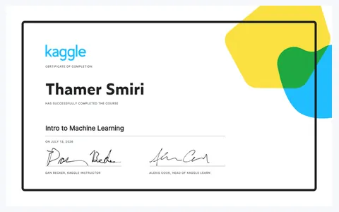
Kaggle Learn
Explore the machine-learning workflow: connect input data to predictions, understand the role of training and validation, and compare model results carefully.
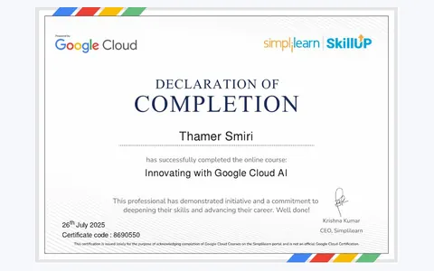
Simplilearn SkillUp
Build introductory familiarity with AI use cases in a cloud context and the vocabulary used to think about AI-powered services and solutions.
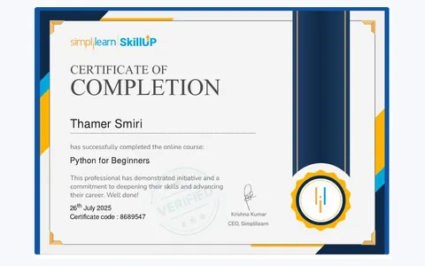
Simplilearn SkillUp
Strengthen beginner Python skills by practicing basic syntax, variables, conditions, loops, and the logic behind small scripts.
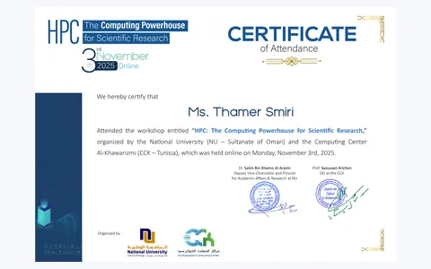
High-performance computing workshop
Connect high-performance computing with scientific research and understand why demanding computational workloads may benefit from powerful computing systems.
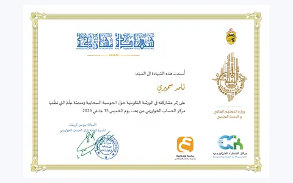
Cloud learning activity
Take away a broader understanding of cloud computing and the role that remote infrastructure and services can play in technical projects.
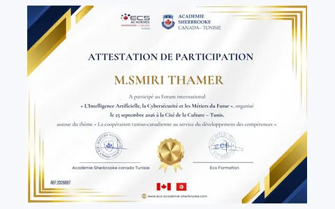
International forum · Tunis · 25 September 2026
Reflect on the forum themes: how AI and cybersecurity affect future jobs, why technical skills keep evolving, and how Tunisian–Canadian cooperation can support skills development.
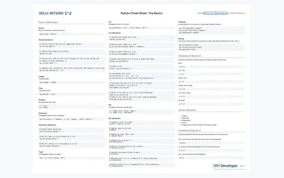
Quick-reference learning resource — not a certification
A quick reference for Python basics, including data types, strings, lists, list operations, indexing, and slicing. This is a learning resource, not a certification.
These documents record learning, assessment, or participation. They are not presented as proof of professional mastery. Please open each document for its full details.
The approach I want to keep: learn the fundamentals, apply them, and stay curious.
Strengthen mathematics, programming, algorithms, and data structures through university study and deliberate practice.
Learn through structured courses, workshops, cybersecurity activities, and guided technical challenges.
Develop practical projects, keep the code readable, describe what I learned, and improve with every iteration.
Interested in technology, student projects, cybersecurity, or learning together? I’d be happy to connect.